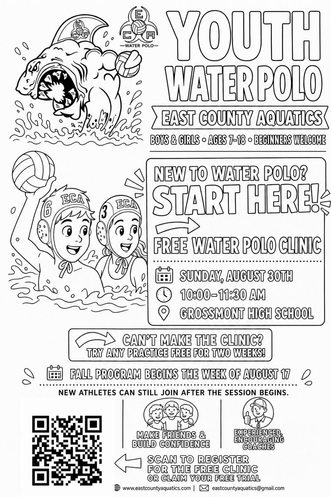

Welcome to San Diego East County Aquatics (ECA Water Polo). At ECA, we are committed to building athletes, character, and community. We offer programs all year long for ages 7–18+, from beginner to advanced competitive teams.
August 17 – October 31
Fun for Boys & Girls — Ages 7–18
Additional fee — USA Water Polo Bronze level membership minimum required to play. No practice Labor Day (9/7). Water safe, can swim 50 yards freestyle, and can tread water for a minute or more.
Team schedules are now posted on individual team pages — see the Teams page for updates.
Register Now!No experience necessary. We go all year long — spring, summer, fall, and winter. Come try us out for free — available only to new members. For practice times and locations, see the Teams page and select your athlete's age group. Does not apply to Splashball.
Questions? Email us at eastcountyaquatics@gmail.com
Register Now!
Ages 7–14
Sunday, August 30th
10:00–11:30 AM
@ Grossmont High School Pool
Available to new members. Wear your swimsuit or board shorts to the clinic — no experience necessary!
Questions? Email eastcountyaquatics@gmail.com
Register Now!East County Aquatics gives East County San Diego athletes a place to learn the game, get stronger, and compete — while making lifelong friends along the way. Whether your athlete is picking up a water polo ball for the first time or chasing a spot on a Junior Olympics roster, there's a team for them at ECA.
Youth, middle school, high school, and Masters programs organized by age group and skill level, from introductory play to competitive travel teams.
Age-group teams compete throughout the season with an eye toward Junior Olympics qualification and post-season tournaments.
As a non-profit, ECA depends on coaches, board members, sponsors, and volunteer families to keep the program affordable and running strong.
No experience needed to get started. Our beginner-friendly age groups teach swimming fitness, ball skills, and game basics before athletes move into competitive play.
See Programs & Age GroupsSan Diego East County Aquatics (ECA) is a year-round non-profit water polo program designed to improve athletes' skills of the game while also improving fitness. ECA accommodates beginners who want to participate in a fun-filled team sport, and experienced athletes who want to develop their skills. Building athletes, character, and community. Since 2009.
Help us improve ECA with your support. Thank you from all of us here at ECA. ECA is a non-profit organization — our success depends on donations, sponsors, fundraisers, and volunteers.
Donate Here!Join the BAND app by age group for more ways to stay in the know. Email us at eastcountyaquatics@gmail.com for the link.
Instagram (eastcountyaquatics) · Facebook (@SanDiegoECA) · Facebook Family Page · YouTube (ECA 10u Water Polo & ECA 12u Water Polo)